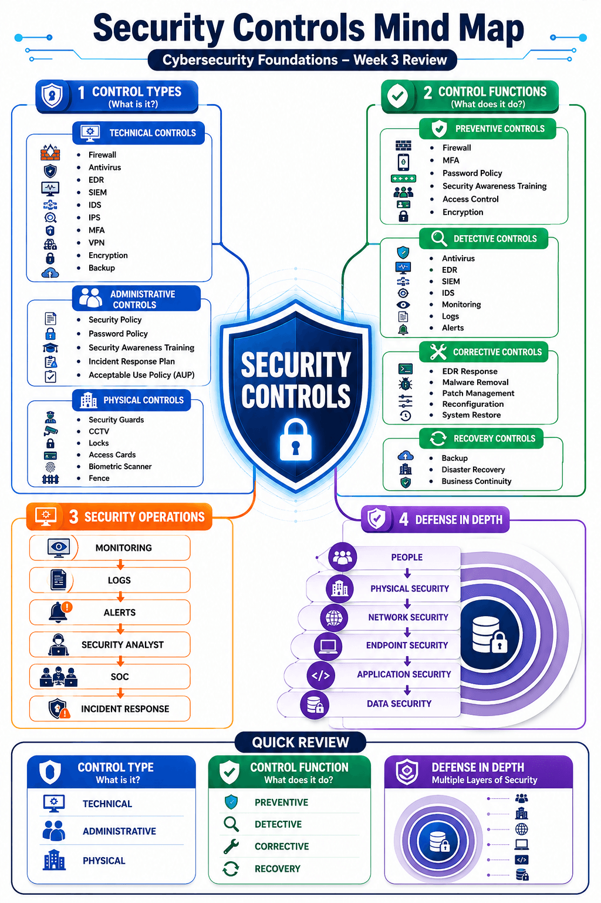
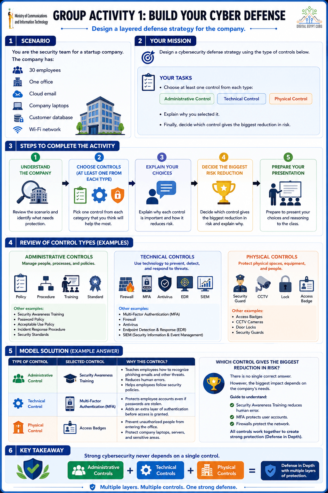
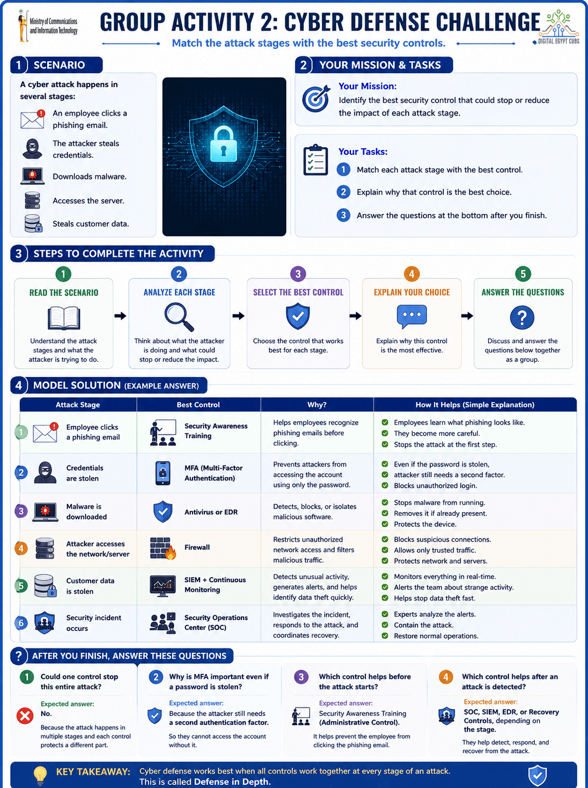

الترجمة: الضوابط الأمنية
🗣️ Speaker Notes
"يا شباب، أول حاجة لازم نفهمها هي يعني إيه Security Controls. تخيل إن عندك بيت، هل باب واحد وقفل واحد كفاية يحميه؟ غالبًا لا. هتحتاج باب قوي، كاميرات، إنذار، ويمكن حد يحرس المكان. نفس الفكرة في الأمن السيبراني، الـ Security Controls هي مجموعة وسائل بنستخدمها مع بعض علشان نحمي الشركة من الهجمات الإلكترونية. الهدف منها مش إنها تمنع كل الهجمات، لكن إنها تقلل فرصة الهجوم، ولو حصل تكتشفه بسرعة وتتعامل معاه."
👨🎓 مثال عملي
"شركة مركبة Firewall، وأنتي فيروس، وبتستخدم MFA. كل واحدة بتحمي الشركة بطريقة مختلفة."
الترجمة: التهديدات الإلكترونية
🗣️ Speaker Notes
"التهديد الإلكتروني هو أي حاجة ممكن تسبب ضرر للنظام أو البيانات، سواء كان هاكر، فيروس، أو حتى موظف ارتكب غلطة. يعني التهديد مش لازم يكون هجوم حصل بالفعل، لكنه حاجة ممكن تسبب مشكلة."
👨🎓 مثال عملي
"هاكر بيحاول يخمن باسورد حساب موظف."
الترجمة: المخاطر الأمنية
🗣️ Speaker Notes
"الـ Risk هو احتمال إن التهديد ينجح ويعمل ضرر. يعني لو عندك ثغرة والهاكر استغلها، هنا الخطر بقى حقيقي. كل ما كانت الحماية ضعيفة، كل ما الـ Risk يزيد."
👨🎓 مثال عملي
"شركة مش محدثة أجهزتها، فاحتمال إصابتها بفيروس أعلى."
الترجمة: الحماية متعددة الطبقات
🗣️ Speaker Notes
"بدل ما نعتمد على وسيلة حماية واحدة، بنستخدم أكتر من طبقة حماية. لو طبقة فشلت، الطبقة اللي بعدها تقدر تمنع الهجوم أو تقلل تأثيره."
👨🎓 مثال عملي
"حتى لو الهاكر عرف الباسورد، هيقف عند الـ MFA ومش هيقدر يدخل."
🎤 Slide 2 — Recap: Administrative Controls
الترجمة: الضوابط الإدارية
🗣️ Speaker Notes
"النوع ده من الحماية بيركز على الأشخاص وطريقة الشغل، مش على الأجهزة. يعني بدل ما نركب برنامج، بنحط قوانين وتعليمات وتنظيم يخلي الموظفين يشتغلوا بشكل آمن."
👨🎓 مثال عملي
"الشركة تمنع أي موظف يشارك الباسورد مع زميله."
الترجمة: السياسات
🗣️ Speaker Notes
"الـ Policy هي القواعد العامة اللي الشركة بتحطها. بتوضح إيه المسموح وإيه الممنوع، وكل الموظفين لازم يلتزموا بيها."
👨🎓 مثال عملي
"سياسة بتقول إن كل موظف لازم يستخدم باسورد قوي."
الترجمة: الإجراءات
🗣️ Speaker Notes
"لو الـ Policy قالت لازم نعمل حاجة، فالـ Procedure بتشرح نعملها إزاي خطوة بخطوة."
👨🎓 مثال عملي
"خطوات تغيير كلمة السر كل 90 يوم."
الترجمة: المعايير
🗣️ Speaker Notes
"المعيار بيحدد الحد الأدنى اللي لازم يتطبق. يعني مش اختيار، لكن لازم كل الأقسام تلتزم بيه."
👨🎓 مثال عملي
"كل كلمات المرور لازم تكون 12 حرف على الأقل."
الترجمة: تدريب التوعية الأمنية
🗣️ Speaker Notes
"حتى لو عندك أفضل برامج حماية، الموظف ممكن يضغط على لينك مزيف ويضيع كل ده. علشان كده الشركات بتدرب الموظفين على التعرف على الهجمات."
👨🎓 مثال عملي
"تعليم الموظفين يفرقوا بين الإيميل الحقيقي والإيميل المزيف."
الترجمة: الضوابط التقنية
🗣️ Speaker Notes
"الضوابط التقنية هي وسائل حماية معتمدة على التكنولوجيا نفسها. يعني برامج وأجهزة بتشتغل تلقائيًا علشان تمنع أو تكتشف الهجمات."
👨🎓 مثال عملي
"برنامج Antivirus على جهازك يعتبر Technical Control."
الترجمة: الجدار الناري
🗣️ Speaker Notes
"الـ Firewall زي حارس واقف على باب الشركة. كل البيانات اللي داخلة أو خارجة لازم تعدي عليه، وهو يقرر يسمح لها ولا يمنعها."
👨🎓 مثال عملي
"منع جهاز غريب من الوصول لسيرفر الشركة."
الترجمة: مضاد الفيروسات
🗣️ Speaker Notes
"برنامج بيفحص الملفات والبرامج علشان يكتشف الفيروسات ويحذفها قبل ما تعمل ضرر."
يا شباب، أول حاجة لازم نعرف إن الـ Antivirus هو أقدم وسيلة حماية موجودة تقريبًا على أي جهاز.
فكروا فيه كأنه حارس واقف على باب البيت، أي ملف جديد داخل الجهاز بيبص عليه الأول.
هو بيعمل Scan للملفات والبرامج، ولو لقى ملف معروف إنه Virus أو Malware بيمنعه أو يحذفه.
الـ Antivirus بيعتمد بشكل كبير على حاجة اسمها Signature Database.
الـ Signature دي ممكن تعتبرها زي بصمة أو صورة للمجرمين المعروفين.
كل ما شركة الـ Antivirus تكتشف Malware جديد، تضيف بصمته في قاعدة البيانات.
بعد كده لما الملف يدخل جهازك، يقارن بصمته بالبصمات الموجودة.
لو لقاها مطابقة يقول:
'أيوة ده Malware معروف'
ويمنعه فورًا."
"طيب هل الـ Antivirus بيمنع أي هجوم؟
الإجابة لأ.
لو المهاجم كتب Malware جديد لسه محدش شافه قبل كده، فالـ Antivirus غالبًا مش هيعرفه لأنه معندوش Signature بتاعته.
كمان لو الملف شكله عادي لكن بيعمل تصرفات غريبة بعد التشغيل، الـ Antivirus التقليدي ممكن يفوته."
طالب حمل لعبة مكركة.
أثناء التحميل الـ Antivirus اكتشف إن الملف معروف إنه Trojan.
منع تشغيله قبل ما يشتغل.
الترجمة: اكتشاف والاستجابة على الأجهزة الطرفية
🗣️ Speaker Notes
"الـ EDR يعتبر نسخة أذكى من الـ Antivirus. مش بس بيدور على الفيروسات، لكنه بيراقب سلوك الجهاز باستمرار، ولو لاحظ تصرف غريب يبدأ يتعامل معاه حتى لو الهجوم جديد."
وده هنشرحه بتفصيل اكتر في السلايد الجايه
الترجمة: المصادقة متعددة العوامل
🗣️ Speaker Notes
"بدل ما تعتمد على الباسورد فقط، بيطلب منك إثبات هوية إضافي، زي كود على الموبايل أو بصمة."
👨🎓 مثال عملي
"بعد كتابة الباسورد يوصلك كود على الهاتف."
الترجمة: منصة تجمع وتحلل أحداث الأمن السيبراني.
ودي برضه هنشرحها السلايد الجايه علشان نقول الفرق بينها وبين ال edr
الترجمة: الجهاز الطرفي
🗣️ Speaker Notes
"الـ Endpoint هو أي جهاز متصل بشبكة الشركة، زي الكمبيوتر أو اللابتوب أو الموبايل. الأجهزة دي هي أكتر مكان بيبدأ منه الهجوم، علشان كده لازم نراقبها باستمرار."
👨🎓 مثال عملي
"لابتوب موظف متوصل بشبكة الشركة."
الترجمة: نظام كشف والاستجابة للهجمات على أجهزة المستخدم.
🗣️ Speaker Notes
"الـ EDR بيشتغل طول الوقت ويراقب كل اللي بيحصل على الجهاز. لو اكتشف سلوك غريب، زي برنامج بيحاول يغير ملفات كتير أو يتصل بسيرفر مشبوه، يقدر ينبه مسؤول الأمن أو حتى يعزل الجهاز تلقائيًا. عشان كده هو أقوى من الـ Antivirus التقليدي لأنه بيركز على سلوك الجهاز مش على الفيروسات المعروفة بس."
ناس كتير فاكرة إن EDR هو Antivirus متطور، لكنه في الحقيقة بيعمل حاجات أكتر بكتير.
الـ Antivirus بيدور على فيروس معروف ويشيله.
لكن الـ EDR بيراقب الجهاز طول الوقت.
يبص:
البرامج اللي بتشتغل
الملفات اللي بتتغير
الاتصالات اللي بتخرج للإنترنت
أوامر PowerShell
محاولات سرقة الـ Passwords
ولو لقى سلوك غريب، يقدر يعمل إجراءات بنفسه.
مثلاً:
يعزل الجهاز عن الشبكة.
يوقف البرنامج.
يبلغ فريق الـ SOC.
يحتفظ بكل الأدلة علشان التحقيق.
يعني الـ EDR مش بس بيكتشف، ده كمان بيرد على الهجوم."
الموظف فتح ملف PDF.
الملف شغّل PowerShell وحاول يحمل Malware من الإنترنت.
الـ Antivirus ممكن ميعرفوش لأنه فيروس جديد.
لكن الـ EDR لاحظ إن Word شغّل PowerShell وبعدها حاول يعمل اتصال خارجي.
قال:
"ده سلوك مش طبيعي."
فقفل العملية وعزل الجهاز.
الترجمة: الأنشطة المشبوهة
🗣️ Speaker Notes
"دي أي تصرفات غير طبيعية بتحصل على الجهاز، وممكن تكون بداية هجوم إلكتروني."
👨🎓 مثال عملي
"برنامج بيحاول يفتح ملفات النظام بدون سبب."
الترجمة: عزل الجهاز
🗣️ Speaker Notes
"لو الـ EDR اكتشف إن جهاز اتصاب، ممكن يفصله عن الشبكة مؤقتًا علشان يمنع انتشار الهجوم."
👨🎓 مثال عملي
"فصل لابتوب مصاب بفيروس عن باقي أجهزة الشركة."
الترجمة: منصة تجمع وتحلل أحداث الأمن السيبراني.
🗣️ Speaker Notes
"الـ SIEM بيجمع الـ Logs من كل الأجهزة، ويحللها علشان يكتشف لو فيه نشاط مش طبيعي أو هجوم بيحصل."
الـ SIEM مختلف تمامًا عن الـ EDR.
الـ EDR بيشتغل على جهاز واحد.
لكن الـ SIEM بيبص على الشركة كلها.
تخيل عندك:
500 جهاز
20 Server
Firewall
Router
Active Directory
Cloud
كل واحد بيطلع Logs.
لو الـ Security Analyst حاول يقرأهم واحد واحد هيقعد أسبوع.
هنا ييجي دور الـ SIEM.
هو بيجمع كل الـ Logs في مكان واحد.
بعدها يبدأ يحللهم ويعمل Correlation.
يعني يربط الأحداث ببعض.
مثلاً:
نفس اليوزر دخل من القاهرة.
وبعدها بدقيقتين دخل من ألمانيا.
وفي نفس الوقت حصل Download ضخم.
وبعدها الجهاز بدأ يبعت بيانات.
كل حدث لوحده ممكن يبقى عادي.
لكن لما الـ SIEM يجمعهم مع بعض يعرف إن فيه Attack."
Firewall قال:
فيه اتصال غريب.
Active Directory قال:
فيه Login فاشل 50 مرة.
EDR قال:
فيه PowerShell اشتغل.
الـ SIEM جمع الثلاث أحداث وقال:
"دي Incident واحدة."
وبعت Alert لفريق الـ SOC.
| EDR | SIEM |
| يحمي Endpoint | يراقب المؤسسة كلها |
| يركز على جهاز واحد | يجمع Logs من كل الأجهزة |
| يكتشف سلوك الجهاز | يربط الأحداث معًا (Correlation) |
| يقدر يعزل الجهاز | يرسل Alerts ويساعد في التحقيق |
👨🎓 مثال عملي
"يلاحظ إن فيه 500 محاولة Login فاشلة في دقيقة واحدة."
الترجمة: الضوابط المادية
🗣️ Speaker Notes
"لحد دلوقتي اتكلمنا عن الحماية بالبرامج والسياسات، لكن فيه نوع تالت اسمه Physical Controls. وده بيركز على حماية المكان نفسه والأجهزة الموجودة فيه. لأن لو حد قدر يدخل غرفة السيرفرات مثلًا، ممكن يعمل ضرر حتى لو عندك أقوى برامج حماية."
👨🎓 مثال عملي
"شركة بتمنع أي شخص يدخل غرفة السيرفرات إلا لو معاه تصريح."
الترجمة: الأصول المادية
🗣️ Speaker Notes
"الأصول المادية هي أي حاجة ملموسة ليها قيمة داخل الشركة، زي الكمبيوترات، السيرفرات، الهاردات، وأجهزة الشبكة. لازم نحميها من السرقة أو التلف أو أي وصول غير مصرح بيه."
👨🎓 مثال عملي
"السيرفر الموجود في غرفة الـ IT يعتبر Physical Asset."
الترجمة: أفراد الأمن
🗣️ Speaker Notes
"أفراد الأمن بيكونوا أول خط دفاع في المبنى. بيتأكدوا إن الشخص اللي داخل مصرح له، ويمنعوا أي حد غريب من الوصول للمناطق الحساسة."
👨🎓 مثال عملي
"الزائر لازم يسجل بياناته قبل ما يدخل الشركة."
الترجمة: كاميرات المراقبة
🗣️ Speaker Notes
"الكاميرات مش بتمنع الهجوم بنفسها، لكنها بتسجل كل اللي بيحصل. ولو حصلت مشكلة نقدر نرجع للفيديوهات ونعرف مين عمل إيه وإمتى."
👨🎓 مثال عملي
"بعد سرقة جهاز من الشركة، يتم مراجعة تسجيلات الكاميرات."
الترجمة: الأقفال
🗣️ Speaker Notes
"الأقفال وسيلة بسيطة لكنها مهمة جدًا. وظيفتها تمنع أي شخص غير مصرح له من الوصول للأجهزة أو الغرف المهمة."
👨🎓 مثال عملي
"غرفة السيرفرات بتكون مقفولة بمفتاح أو قفل إلكتروني."
الترجمة: بطاقات الدخول
🗣️ Speaker Notes
"بدل ما أي حد يدخل أي مكان، كل موظف بيكون معاه كارت بيفتح له الأماكن المسموح بيها فقط."
👨🎓 مثال عملي
"موظف الـ HR يقدر يدخل قسمه فقط، لكن ميقدرش يدخل غرفة السيرفرات."
الترجمة: وظائف وسائل الحماية
"الـ Control Functions بتجاوب على سؤال واحد:
السيكيورتي كنترول دي بتعمل إيه؟
يعني وظيفتها إيه؟
هل تمنع؟
ولا تكتشف؟
ولا تصلح؟
ولا ترجع النظام يشتغل تاني؟
إذن هنا إحنا بنتكلم عن وظيفة الـ Control."
وسيلة حماية وقائية
"الـ Preventive Control هدفه يمنع الهجوم من البداية.
يعني المهاجم يحاول يدخل...
الميكانيزم ده يقوله لأ.
كأنه باب عليه قفل.
طالما الباب مقفول، الحرامي مش هيعرف يدخل."
Firewall
MFA
Strong Password Policy
Access Control
Awareness Training
طالب حاول يدخل بباسورد غلط.
الـ MFA طلب كود إضافي.
المهاجم وقف.
يبقى ده Preventive.
وسيلة اكتشاف
"الـ Detective مش بيمنع.
هو بيقولك إن في مشكلة حصلت.
زي كاميرات المراقبة.
الكاميرا مش هتمنع السرقة.
بس هتقولك إن السرقة حصلت."
SIEM
IDS
Security Logs
Monitoring
Alerts
الهاكر دخل فعلاً.
لكن الـ SIEM لاحظ Login غريب.
وبعت Alert.
يبقى Detective.
وسيلة إصلاح
"بعد ما الهجوم يحصل...
لازم نصلح المشكلة.
ده دور الـ Corrective Controls.
يعني نزيل الـ Malware.
نقفل الـ Vulnerability.
نرجع الأمور لطبيعتها."
Patch Management
Malware Removal
System Restore
Reconfiguration
الجهاز اتصاب بـ Malware.
الـ IT حذف الـ Malware.
وسطب Patch.
يبقى Corrective.
وسيلة استعادة
"أحيانًا الضرر بيكون كبير.
فلازم نرجع البيانات.
أو نشغل الخدمة مرة تانية.
ده اسمه Recovery."
Backup
Disaster Recovery
Business Continuity
Ransomware شفر الملفات.
رجعنا Backup.
الخدمة اشتغلت.
يبقى Recovery.
"الطلبة دايمًا بتتلخبط بين الاتنين.
فافتكروا السؤالين دول.
لو سألتك:
الـ Control دي بتعمل إيه؟
يبقى بتتكلم عن Function.
أما لو سألتك:
الـ Control دي عبارة عن إيه؟
يبقى بتتكلم عن Type."
| Control Functions | Control Types |
| بتشرح وظيفة الـ Control | بتشرح طبيعة الـ Control |
| What does it do? | What is it? |
| Preventive | Technical |
| Detective | Administrative |
| Corrective | Physical |
| Recovery | — |
Type: Technical (لأنه Software/Hardware).
Function: Preventive (لأنه بيمنع الهجمات قبل ما تدخل).
Type: Technical.
Function: Detective (بيكتشف ويربط الأحداث ويطلع Alerts).
Type: Administrative.
Function: Preventive (بيقلل إن الموظف يقع في Phishing أو Social Engineering).
Type: Technical (في الغالب لأنه نظام أو برنامج لإدارة النسخ الاحتياطي).
Function: Recovery (بيرجع البيانات بعد الحادث).
Type: Physical.
Function: Preventive.
Control Type = إيه هو؟ (What is it?)
Technical
Administrative
Physical
Control Function = بيعمل إيه؟ (What does it do?)
Preventive
Detective
Corrective
Recovery
الترجمة: الضوابط الوقائية
🗣️ Speaker Notes
"الضوابط الوقائية هدفها تمنع الهجوم من الأساس قبل ما يحصل."
👨🎓 مثال عملي
"الـ Firewall يمنع الاتصال المشبوه قبل ما يدخل الشبكة."
الترجمة: الضوابط الكاشفة
🗣️ Speaker Notes
"لو الهجوم حصل بالفعل، الضوابط الكاشفة بتكتشفه بسرعة وتبلغ مسؤول الأمن."
👨🎓 مثال عملي
"الـ SIEM يكتشف نشاط غريب ويرسل Alert."
"بصوا على الجدول:
Firewall و MFA و Lock و Awareness Training كلهم Preventive لأنهم بيمنعوا المشكلة قبل حدوثها.
أما SIEM و Logs و CCTV و Alerts فهم Detective لأنهم بيكتشفوا المشكلة بعد ما تبدأ أو أثناء حدوثها."
الترجمة: المراقبة والاكتشاف
🗣️ Speaker Notes
"بعد ما نحط وسائل الحماية، لازم نراقب الأنظمة باستمرار. لأن ممكن هجوم ينجح في تجاوز بعض وسائل الحماية، وهنا دور المراقبة إنها تكتشف أي نشاط غريب بسرعة قبل ما يكبر."
👨🎓 مثال عملي
"سيستم يلاحظ إن فيه آلاف محاولات تسجيل الدخول في دقيقة واحدة."
الترجمة: تسجيل الأحداث
🗣️ Speaker Notes
"الـ Logs عبارة عن سجل بيسجل كل اللي بيحصل داخل النظام، زي تسجيل الدخول، فتح الملفات، أو تشغيل البرامج. السجل ده بيساعدنا نعرف إيه اللي حصل لو وقع هجوم."
👨🎓 مثال عملي
"الـ Log يسجل إن مستخدم دخل الساعة 9 صباحًا."
الترجمة: التنبيهات
🗣️ Speaker Notes
"بدل ما مسؤول الأمن يراجع الـ Logs بنفسه طول اليوم، النظام يبعتله Alert أول ما يكتشف حاجة مش طبيعية."
👨🎓 مثال عملي
"يوصل إشعار إن فيه 50 محاولة Login فاشلة."
الترجمة: المراقبة المستمرة
🗣️ Speaker Notes
"المراقبة معناها إن النظام بيتابع الأجهزة والشبكة 24 ساعة، ويلاحظ أي تغيير أو نشاط غير معتاد."
👨🎓 مثال عملي
"متابعة استهلاك الشبكة بشكل مستمر."
الترجمة: اكتشاف التهديدات
🗣️ Speaker Notes
"مش أي Alert معناه هجوم. الـ Threat Detection بيحلل البيانات علشان يفرق بين إنذار كاذب، وبين تهديد حقيقي محتاج تدخل."
👨🎓 مثال عملي
"التمييز بين موظف نسي الباسورد، وهاكر بيجرب آلاف كلمات المرور."
الترجمة: مركز العمليات الأمنية
🗣️ Speaker Notes
"بعد ما عرفنا وسائل الحماية المختلفة، لازم يبقى فيه فريق مسؤول يتابع كل وسائل الحماية دي. الفريق ده اسمه SOC. تقدر تعتبره غرفة التحكم أو غرفة العمليات بتاعة الأمن السيبراني في الشركة. وظيفته إنه يراقب الأنظمة طول الوقت، ويكتشف أي هجوم، ويتصرف بسرعة قبل ما المشكلة تكبر."
👨🎓 مثال عملي
"شركة كبيرة زي بنك بيكون عندها فريق SOC شغال 24 ساعة يراقب كل الأجهزة والشبكات."
الترجمة: الأحداث الأمنية
🗣️ Speaker Notes
"الـ Security Event هو أي حدث له علاقة بالأمن، زي محاولة Login، أو تشغيل برنامج، أو تغيير صلاحيات مستخدم. مش كل Event معناه هجوم، لكنه معلومة لازم تتسجل."
👨🎓 مثال عملي
"موظف سجل دخول على حسابه يعتبر Security Event."
الترجمة: المراقبة المستمرة 24/7
🗣️ Speaker Notes
"فريق الـ SOC بيراقب الأنظمة 24 ساعة في اليوم و7 أيام في الأسبوع، لأن الهجمات ممكن تحصل في أي وقت، حتى لو الشركة مقفولة."
👨🎓 مثال عملي
"في الساعة 3 الفجر حصلت محاولة اختراق، والـ SOC استقبل التنبيه فورًا."
الترجمة: التنبيهات المشبوهة
🗣️ Speaker Notes
"لما النظام يلاحظ حاجة غير طبيعية، بيبعت Alert لفريق الـ SOC. الفريق يبدأ يشوف هل ده هجوم حقيقي ولا مجرد إنذار كاذب."
👨🎓 مثال عملي
"وصول Alert بسبب 200 محاولة Login فاشلة."
الترجمة: الحوادث الأمنية
🗣️ Speaker Notes
"لو اتأكد إن فيه هجوم بالفعل، بنسميه Security Incident. هنا فريق الـ SOC يبدأ يعزل الأجهزة المصابة ويوقف الهجوم."
👨🎓 مثال عملي
"اكتشاف جهاز اتصاب بـ Ransomware."
الترجمة: إدارة معلومات وأحداث الأمن
🗣️ Speaker Notes
"الـ SOC بيعتمد بشكل كبير على أدوات زي SIEM لأنها بتجمع الـ Logs من كل الأجهزة، وتحللها، وتبعت تنبيهات لما يحصل نشاط غريب."
👨🎓 مثال عملي
"الـ SIEM يلاحظ إن مستخدم دخل من مصر وبعدها بدقيقتين من دولة تانية."
"الصورة بتوضح شخص قاعد قدام شاشات كتير بيراقب الشبكة. ده بالضبط شغل فريق الـ SOC، إنه يتابع كل الأنظمة في نفس الوقت."
الترجمة: المراقبة
🗣️ Speaker Notes
"أول خطوة هي المراقبة المستمرة. الأنظمة بتجمع بيانات وتتابع كل اللي بيحصل."
👨🎓 مثال عملي
"متابعة كل محاولات تسجيل الدخول."
الترجمة: الاكتشاف
🗣️ Speaker Notes
"بعد المراقبة، لو النظام لاحظ حاجة غريبة يبدأ يحدد هل ده تهديد حقيقي."
👨🎓 مثال عملي
"اكتشاف عدد كبير جدًا من محاولات Login."
الترجمة: التحقيق
🗣️ Speaker Notes
"بعد اكتشاف المشكلة، يبدأ فريق الـ SOC يجمع الأدلة ويحلل سبب الهجوم، ويعرف الأجهزة أو الحسابات المتأثرة."
👨🎓 مثال عملي
"مراجعة الـ Logs لمعرفة أول جهاز اتصاب."
الترجمة: الاستجابة
🗣️ Speaker Notes
"بعد التأكد من الهجوم، يبدأ الفريق يتعامل معاه، زي عزل الجهاز أو إيقاف الحساب أو حذف الملف الضار."
👨🎓 مثال عملي
"فصل الجهاز المصاب عن الشبكة."
الترجمة: الاستعادة
🗣️ Speaker Notes
"آخر خطوة هي رجوع الأنظمة تشتغل بشكل طبيعي بعد إزالة الهجوم."
👨🎓 مثال عملي
"استرجاع الملفات من النسخة الاحتياطية."
الترجمة: الدفاع متعدد الطبقات
🗣️ Speaker Notes
"من أهم مبادئ الأمن السيبراني إننا معتمدش على وسيلة حماية واحدة. بنحط أكتر من طبقة حماية، بحيث لو طبقة فشلت، الطبقة اللي بعدها تمنع الهجوم أو تقلل تأثيره."
"يا شباب، تخيلوا إنك بتحمي بيتك.
هل هتعتمد على باب واحد بس؟
أكيد لأ.
هيبقى عندك سور.
وباب.
وقفل.
وكاميرات.
وجرس إنذار.
ويمكن كمان حارس أمن.
ليه؟
لأنك عارف إن أي وسيلة حماية ممكن تفشل لوحدها.
وده بالظبط هو مفهوم Defense in Depth.
بدل ما نعتمد على Security Control واحدة، بنستخدم أكتر من طبقة حماية.
فلو المهاجم قدر يعدي أول طبقة، هيلاقي طبقة تانية، وبعدها تالتة، وهكذا.
الهدف مش إننا نقول الهجوم مستحيل، لكن نخليه أصعب، وأبطأ، وأسهل في الاكتشاف."
👨🎓 مثال عملي
"حتى لو الهاكر عرف الباسورد، هيقابله MFA، ولو دخل هيكتشفه الـ SIEM، ولو بدأ يهاجم الجهاز الـ EDR هيعزله."
ودي مراحعة سريعة على اللي خدناه
Control Type = إيه هو؟ (What is it?)
Technical
Administrative
Physical
Control Function = بيعمل إيه؟ (What does it do?)
Preventive
Detective
Corrective
Recovery
الترجمة: الضوابط الإدارية
🗣️ Speaker Notes
"دي بتوجه الناس من خلال السياسات والقوانين والتدريب."
👨🎓 مثال عملي
"سياسة تمنع مشاركة كلمات المرور."
الترجمة: الضوابط التقنية
🗣️ Speaker Notes
"بتحمي الأنظمة باستخدام برامج وأجهزة الحماية."
👨🎓 مثال عملي
"Firewall أو Antivirus."
الترجمة: الضوابط المادية
🗣️ Speaker Notes
"بتحمي المباني والأجهزة من الوصول غير المصرح به."
👨🎓 مثال عملي
"كاميرات مراقبة وبطاقات دخول."
الترجمة: المراقبة
🗣️ Speaker Notes
"حتى مع وجود كل وسائل الحماية، لازم نتابع الأنظمة باستمرار لاكتشاف أي نشاط غريب."
👨🎓 مثال عملي
"SIEM يراقب الـ Logs."
الترجمة: مركز العمليات الأمنية
🗣️ Speaker Notes
"الـ SOC هو الفريق اللي بيجمع كل الطبقات دي مع بعض، ويتأكد إنها شغالة، ويتعامل مع أي هجوم."
👨🎓 مثال عملي
"فريق الأمن يتابع التنبيهات ويتصرف بسرعة."
الترجمة: بناء دفاع سيبراني قوي
🗣️ Speaker Notes
"السلايد دي بتلخص كل اللي اتعلمناه. الأمن السيبراني مش برنامج واحد ولا جهاز واحد، لكنه مجموعة عناصر بتشتغل مع بعض. لو عنصر منهم ناقص، مستوى الحماية هيقل."
👨🎓 مثال عملي
"شركة عندها Firewall لكن الموظفين بيضغطوا على أي لينك في الإيميل، كده الشركة لسه معرضة للهجوم."
الترجمة: الأشخاص
🗣️ Speaker Notes
"الموظفين هم أول خط دفاع، ولازم يكون عندهم وعي أمني."
👨🎓 مثال عملي
"موظف يكتشف إيميل Phishing قبل ما يفتحه."
الترجمة: الضوابط الإدارية
🗣️ Speaker Notes
"بتحدد القوانين والإجراءات اللي الناس تمشي عليها."
👨🎓 مثال عملي
"سياسة تغيير كلمة السر كل 90 يوم."
الترجمة: الضوابط التقنية
🗣️ Speaker Notes
"برامج وأجهزة تحمي الأنظمة من الهجمات."
👨🎓 مثال عملي
"Firewall وEDR."
الترجمة: الضوابط المادية
🗣️ Speaker Notes
"تحمي الأجهزة والمباني من الوصول غير المصرح به."
👨🎓 مثال عملي
"بطاقات دخول وكاميرات."
الترجمة: المراقبة
🗣️ Speaker Notes
"مراقبة مستمرة لاكتشاف أي تهديد."
👨🎓 مثال عملي
"مراجعة الـ Logs وإرسال Alerts."
الترجمة: منظمة آمنة
🗣️ Speaker Notes
"لما كل العناصر السابقة تشتغل مع بعض، النتيجة تكون شركة أكثر أمانًا وأقل عرضة للهجمات."
👨🎓 مثال عملي
"حتى لو بدأ هجوم، هيتم اكتشافه واحتواؤه بسرعة قبل ما يسبب خسائر كبيرة."
"يا شباب، قبل ما ندخل على الاكتيفيتي خلونا نفتكر إن الأمن السيبراني مش بيعتمد على وسيلة حماية واحدة.
الفكرة إن كل Security Control ليه دور، ولما كلهم يشتغلوا مع بعض، نسبة نجاح الهجوم بتقل جدًا.
السلايد دي بتورينا مثال حقيقي لهجوم Phishing، وإزاي كل طبقة حماية بتتدخل في مرحلة مختلفة."
رسالة تصيد احتيالي
"تخيلوا إن موظف في الشركة وصله Email شكله رسمي.
ممكن يكون مكتوب فيه:
(Your account will expire)
أو
(Click here to verify your password).
الهدف إن الموظف يصدق الرسالة ويضغط على اللينك أو يفتح الملف.
ومن هنا يبدأ الهجوم."
فايه اول حاجة المفروض نعملها علشان نمنع الهكر انه يدخل السيستم بتاعنا عن طريق حاجة زي ال phishing emails
التوعية الأمنية
"أول خط دفاع هو الموظف نفسه.
لو الموظف واخد Awareness Training كويس، هيبدأ يلاحظ علامات الخطر.
هيشوف إن عنوان الإيميل غريب.
أو الرابط مختلف.
أو الرسالة فيها استعجال غير طبيعي.
وساعتها هيعرف إنها Scam ومش هيضغط عليها."
"الموظف لاحظ إن الإيميل مكتوب من Gmail بدل Company Domain، فمسح الرسالة."
المصادقة متعددة العوامل
"نفترض إن الموظف غلط وكتب Username وPassword.
هل كده الهجوم نجح؟
مش بالضرورة.
لو الشركة مفعلة MFA، فالمهاجم هيحتاج كمان كود موجود على موبايل الموظف.
طالما الكود مع الموظف، المهاجم مش هيقدر يدخل بسهولة."
"المهاجم عرف الباسورد، لكن وقف عند شاشة بتطلب Verification Code."
اكتشاف والاستجابة على أجهزة المستخدمين
"لو المهاجم قدر يشغل ملف خبيث على جهاز الموظف، هنا ييجي دور الـ EDR.
الـ EDR بيراقب الجهاز طول الوقت.
لو لقى برنامج بيعمل حاجة غريبة، زي إنه بيشغل PowerShell أو بيعدل ملفات النظام أو بينزل Malware، يطلع Alert أو يمنع البرنامج."
"الملف حاول ينزل Malware، فالـ EDR وقف العملية قبل ما تكمل."
إدارة وتجميع أحداث الأمن السيبراني
"بعد كده ييجي دور الـ SIEM.
الـ SIEM مش بيحمي الجهاز بنفسه.
هو بيجمع Logs وAlerts من كل الأجهزة والسيرفرات في مكان واحد.
لما يحصل أكتر من حدث مشبوه، يربطهم ببعض ويقول لفريق
الأمن:
في احتمال يكون فيه Attack."
"جمع Alert من الإيميل، وAlert من اللابتوب، وAlert من الـ Firewall، وقال إن كلهم مرتبطين بنفس المستخدم."
مركز العمليات الأمنية
"آخر خطوة هي فريق الـ SOC.
الفريق ده هو اللي يستلم الـ Alerts ويبدأ يحقق.
يشوف هل ده Attack حقيقي ولا False Alarm.
ولو فعلاً فيه هجوم، يعزل الجهاز، ويقفل الحساب، ويبدأ عملية الـ Incident Response."
"الـ SOC لقى إن جهاز الموظف مصاب، فعزل الجهاز من الشبكة وغير الباسورد قبل ما الهجوم ينتشر."
"دلوقتي عرفنا أدوات الحماية.
لكن السؤال...
ليه لازم نفضل نراقب الشبكة والأجهزة طول الوقت؟
لأن الهجمات الإلكترونية ممكن تحصل في أي وقت، وممكن تبدأ بحركة صغيرة جدًا.
كل ما نكتشف الهجوم بدري، كل ما الخسائر تقل."
المراقبة المستمرة
"المقصود بـ Continuous Monitoring إننا منسيبش الشبكة من غير متابعة.
الأجهزة، والسيرفرات، والـ Firewalls، وكل الأنظمة بتبعت Logs وAlerts باستمرار.
وده يساعد فريق الأمن يعرف لو فيه أي نشاط غريب أول ما يحصل."
"لو موظف سجل دخول الساعة 3 الفجر من دولة تانية، النظام يطلع Alert فورًا."
الهجمات ممكن تحصل في أي وقت
"المهاجم مش بيستنى ميعاد الشغل.
ممكن الهجوم يحصل بالليل، أو في الإجازات، أو في أي وقت.
عشان كده المراقبة لازم تكون 24/7."
الاكتشاف المبكر يقلل الخسائر
"لو اكتشفنا الهجوم بعد دقيقة غير لما نكتشفه بعد أسبوع.
كل ما نكتشفه أسرع، كل ما نقدر نوقفه قبل ما ينتشر."
التنبيهات تساعد فريق الأمن يستجيب بسرعة
"الـ Alerts زي جرس الإنذار.
أول ما يحصل نشاط غريب، النظام يبلغ فريق الأمن علشان يبدأ التحقيق."
المراقبة تحسن مستوى الأمان
"لما نراقب باستمرار، هنكتشف الثغرات والأخطاء بسرعة، وبالتالي مستوى الأمان يزيد."
استمرارية العمل
"الهدف النهائي إن الشركة تفضل شغالة حتى لو حصل هجوم.
كل ما نكتشف المشكلة بدري، كل ما نرجع الشغل الطبيعي بسرعة."
"بعد ما عرفنا أدوات الحماية، خلونا نتكلم عن الشخص اللي بيستخدم الأدوات دي.
وده هو الـ Security Analyst.
شغله الأساسي إنه يراقب، ويحلل، ويستجيب لأي تهديد."
يراقب كل الـ Alerts اللي بتطلع من الأنظمة.
يحقق في أي نشاط شكله غريب.
يحلل إذا كان النشاط Threat حقيقي ولا مجرد False Positive.
لو اتأكد إن فيه Attack، يبدأ الـ Incident Response.
الهدف النهائي إنه يحافظ على بيانات الشركة وأجهزتها وخدماتها.
طبيعة شغله اليومية."
"دلوقتي جه دوركم.
إنتوا بقيتوا فريق الـ Security Team لشركة ناشئة.
المطلوب من كل Group إنه يبني خطة حماية مناسبة للشركة."
"الشركة دي فيها:
30 موظف.
مكتب واحد.
Cloud Email.
Company Laptops.
Customer Database.
Wi-Fi Network.
يعني شركة صغيرة، لكن عندها بيانات مهمة لازم تتحمي.
مش مطلوب نجيب أغلى حلول في السوق.
المطلوب نختار Security Controls مناسبة لحجم الشركة واحتياجاتها."
"كل Group يناقش:
إيه أهم Controls هيضيفها؟
وليه اختارها؟
وإزاي كل Control هيحمي جزء من الشركة؟
في الآخر كل فريق يعرض تصميمه، ونقارن بين الحلول المختلفة."
إيه أهم Security Controls نحطها عشان نقلل المخاطر لأكبر درجة؟
قبل ما تبدأوا افتكروا إننا اتكلمنا عن 3 أنواع من الـ Security Controls.


دي Controls بتغير سلوك الناس.
يعني Policies + Procedures + Training.
أمثلة:
Security Awareness Training
Password Policy
Acceptable Use Policy
Incident Response Plan
دي Software أو Hardware بيحمي السيستم.
زي:
MFA
Firewall
Antivirus
EDR
دي بتحمي المكان نفسه.
زي:
Door Locks
Access Cards
CCTV
Security Guards
كل Group تختار على الأقل:
Administrative Control
Technical Control
Physical Control
وبعدين تشرح:
ليه اخترناه؟
وفي الآخر تجاوب:
Which control gives the biggest reduction in risk?
أفضل إجابة:
Security Awareness Training
ليه؟
لأن أغلب الهجمات أصلاً بتبدأ بإنسان.
لو الموظف عرف يكتشف Phishing Email من البداية، الهجوم كله هيقف.
يعني بدل ما تعالج المشكلة بعد ما تحصل...
إنت منعتها من الأساس.
أفضل إجابة:
Multi-Factor Authentication (MFA)
ليه؟
لو الباسورد اتسرق...
المهاجم لسه محتاج العامل التاني.
يعني مجرد سرقة Password مش كفاية.
وده بيقلل فرص اختراق الحسابات جدًا.
أفضل إجابة:
Access Badges
ليه؟
عشان أي شخص غريب ميعرفش يدخل الشركة أو يوصل للسيرفرات أو اللابتوبات.
Which control gives the biggest reduction in risk?
الإجابة الصح:
مفيش إجابة واحدة.
كل Control بيحمي جزء مختلف.
لكن لو هنبص على شركات صغيرة...
غالبًا Security Awareness Training هيحقق أكبر تأثير لأنه بيمنع أغلب الهجمات من البداية.
دلوقتي الشركة اتعرضت لهجوم بالفعل.
وإحنا هنشوف كل خطوة المهاجم عملها.
والمطلوب:
لكل خطوة نقول أفضل Security Control كان ممكن يوقفها أو يقلل ضررها.
يعني مش بنحدد نوع الهجوم...
إحنا بنحدد أفضل وسيلة دفاع.

افتكروا الـ Controls اللي خدناها:
Security Controls
│
├── 1. Control Types (What is it?)
│ │
│ ├── Technical Controls
│ │ ├── Firewall
│ │ ├── Antivirus
│ │ ├── EDR
│ │ ├── SIEM
│ │ ├── IDS
│ │ ├── IPS
│ │ ├── MFA
│ │ ├── VPN
│ │ ├── Encryption
│ │ └── Backup
│ │
│ ├── Administrative Controls
│ │ ├── Security Policy
│ │ ├── Password Policy
│ │ ├── Security Awareness Training
│ │ ├── Incident Response Plan
│ │ └── Acceptable Use Policy (AUP)
│ │
│ └── Physical Controls
│ ├── Security Guards
│ ├── CCTV
│ ├── Locks
│ ├── Access Cards
│ ├── Biometric Scanner
│ └── Fence
│
├── 2. Control Functions (What does it do?)
│ │
│ ├── Preventive Controls
│ │ ├── Firewall
│ │ ├── MFA
│ │ ├── Password Policy
│ │ ├── Security Awareness Training
│ │ ├── Access Control
│ │ └── Encryption
│ │
│ ├── Detective Controls
│ │ ├── Antivirus
│ │ ├── EDR
│ │ ├── SIEM
│ │ ├── IDS
│ │ ├── Monitoring
│ │ ├── Logs
│ │ └── Alerts
│ │
│ ├── Corrective Controls
│ │ ├── EDR Response
│ │ ├── Malware Removal
│ │ ├── Patch Management
│ │ ├── Reconfiguration
│ │ └── System Restore
│ │
│ └── Recovery Controls
│ ├── Backup
│ ├── Disaster Recovery
│ └── Business Continuity
│
├── 3. Security Operations
│ │
│ ├── Monitoring
│ ├── Logs
│ ├── Alerts
│ ├── Security Analyst
│ ├── SOC
│ └── Incident Response
│
└── 4. Defense in Depth
│
├── People
├── Physical Security
├── Network Security
├── Endpoint Security
├── Application Security
└── Data Security
كل واحدة ليها وظيفة مختلفة.
Employee clicks a phishing email.
أفضل Control:
Security Awareness Training
ليه؟
لأن الموظف لو اتدرب كويس كان هيعرف إن الإيميل مزيف ومش هيضغط عليه.
Credentials are stolen.
أفضل Control:
MFA
ليه؟
حتى لو الباسورد اتسرق...
المهاجم لسه محتاج العامل التاني.
Malware is downloaded.
أفضل Control:
Antivirus أو EDR
ليه؟
هيكتشف الملف الضار.
أو يعمله Block.
أو يعزله قبل ما يشتغل.
Attacker accesses the server.
أفضل Control:
Firewall
ليه؟
الـ Firewall بيمنع أو يفلتر الاتصالات غير المصرح بيها.
Customer data is stolen.
أفضل Control:
SIEM + Continuous Monitoring
ليه؟
هيلاحظ نشاط غير طبيعي.
ويطلع Alert بسرعة.
وده يساعد الفريق يتدخل قبل ما كل البيانات تتسرق.
Security incident occurs.
أفضل Control:
SOC
ليه؟
الـ SOC هو الفريق المسؤول عن:
التحقيق.
احتواء الهجوم.
الاستجابة.
استرجاع الخدمة.
الإجابة:
لا.
كل Control بيحمي مرحلة مختلفة.
علشان كده بنستخدم Defense in Depth.
يعني Layers متعددة من الحماية.
لأن Password لوحده مش كفاية.
المهاجم محتاج العامل التاني.
Security Awareness Training
لأنه بيمنع الغلطة البشرية من البداية.
ممكن تكون:
SOC
SIEM
EDR
حسب المرحلة اللي وصلها الهجوم.
قول للطلبة في النهاية:
"لاحظوا إن الهجوم الحقيقي مبيتوقفش بسبب Tool واحدة. كل مرحلة ليها وسيلة دفاع مختلفة. عشان كده الشركات الكبيرة مبتشتريش Antivirus وخلاص، لكنها بتبني Layers من الحماية: Training + MFA + Firewall + EDR + SIEM + SOC. وده اسمه Defense in Depth، وهو أهم فكرة في الدرس كله."